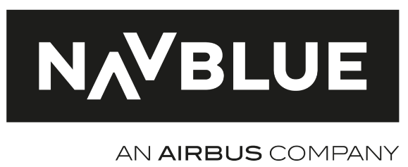

Il y a encore quelques années, il n’était pas rare de croiser des pilotes avec de grosses valises pleines de documents de navigation, de manuels de vol et toute sorte de documents. Mais aujourd’hui, plus rien. Que s’est-il passé ? L’informatique est passée par là ! Aujourd’hui, il est courant de voir des pilotes avec des tablettes. Elles contiennent tout ce dont le pilote a besoin et sont une petite révolution dans les cockpits des avions.
Le plus gros avantage de ces outils est leur petit format : petites et légères, ces tablettes peuvent être gardées à proximité du pilote. Mais elles sont également très polyvalentes, et simplifient la vie des pilotes. NAVBLUE, partenaire du club Air INSA et filiale d'Airbus, a joué un rôle clé dans cette transition, en offrant des solutions informatiques spécifiquement conçues pour le secteur de l'aviation.
NAVBLUE propose de nombreux produits logiciels, dans la planification des vols, la performance, l'analyse des données de vol, la planification d'équipage, et les données de navigation. Par exemple, l’entreprise a récemment présenté Mission+, un Assistant de vol Électronique conçu spécifiquement pour les pilotes. Cette solution simplifie l'accès aux données de gestion de vol, à la documentation, aux check-lists et cartes de navigation, à la météo en temps réel et aux métriques de performance de l’avion. Ces produits sont très pratiques pour la préparation et la prise de décision pendant les vols !
Mais NAVBLUE se distingue aussi par son rôle dans la création d'une aviation plus écologique et durable. En effet, les solutions développées par l’entreprise permettent une gestion plus efficace des itinéraires, optimisent la consommation de carburant et donc réduisent les émissions. Ce qui fait de NAVBLUE un acteur de la transformation de l'industrie aéronautique vers des pratiques plus respectueuses de l'environnement.
Nous sommes donc dans une nouvelle ère prometteuse où l’informatique s’invite dans le cockpit et participe à améliorer les opérations en vol, mais aussi à façonner un secteur de l’aviation plus respectueux de l’environnement. Et NAVBLUE est le parfait exemple de cette transition.